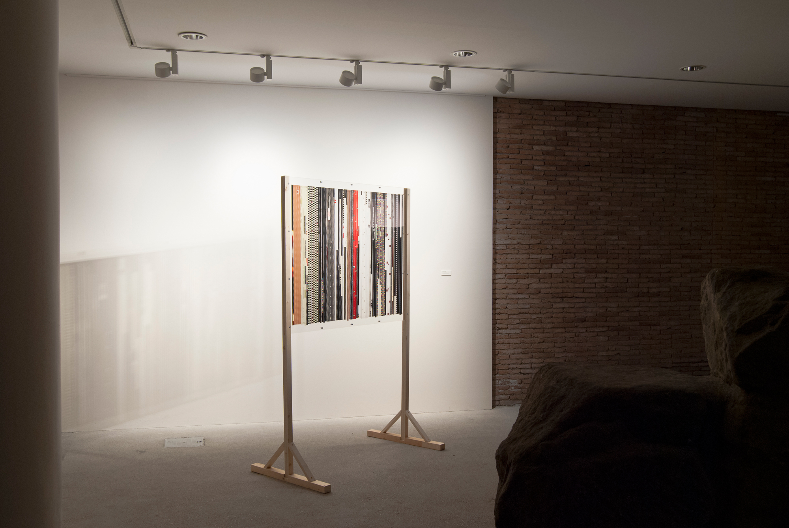
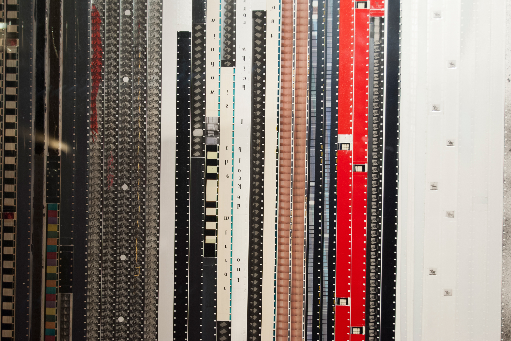

2016
Installation
Wood, 100 x 125 cm plexiglass sheets, 16mm film strips
Estados alterados (Altered States) showcases the material remains of a filmic intervention. The work consists of 16mm film strips—originating from The Gas Works project—preserved between transparent acrylic sheets. In this state, the film is detached from the act of projection to reveal itself in a purely pictorial and sculptural dimension.
Through "solid montage" techniques—such as scratching, painting, sewing, and collage—the celluloid ceases to be a vehicle for images and becomes a surface for physical inscription. Suspended within the plexiglass, the film strips function as layers of a visual archaeology; a frozen cinema where light no longer passes through a moving frame but instead bounces off its material relief, inviting a tactile contemplation of the image.
See also: The Gas Works